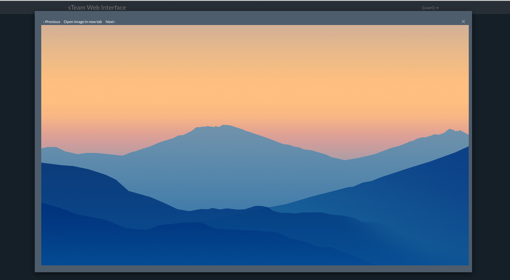
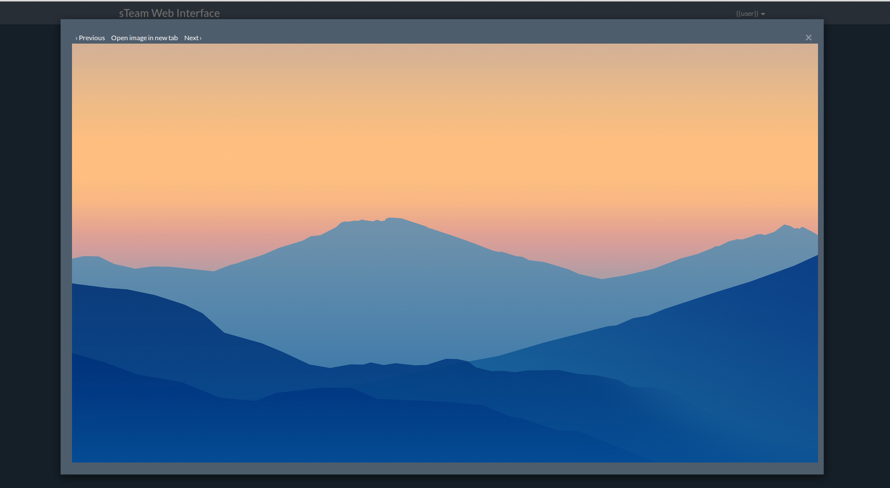

By Akhil Pandey, July 15, 2016
By Akhil Pandey, July 15, 2016
In the previous article i have addressed about developing audio and video players
for sTeam. To know more about developing audio and video players, click here. This article is an extension to the previous one, as to how one could develop image viewer in angular.
Since sTeam is a collaboration platform there was the necessity of having an image viewer. So in angular bootstrapLightbox is very useful in building image viewers, galleries, sliders etc.
Implementation Strategy :
There are basically two things involved in developing this;
- steamImageViewer // the controller
- imageViewer($index) // DOM
The Controller
angular.module('steam', [ 'bootstrapLightbox', 'ui.bootstrap' ])
.controller('steamImageViewer', ['$scope', 'Lightbox', function($scope, Lightbox) {
$scope.images = [
{
'url': 'https://societyserver.org/home/akhilhector/playground%20-%20hector/icon1.png',
'title': 'icon1.png'
},
{
'url': 'https://societyserver.org/home/akhilhector/playground%20-%20hector/icon3.jpg',
'title': 'icon3.jpg'
},
{
'url': 'https://societyserver.org/home/akhilhector/playground%20-%20hector/icon4.png',
'title': 'icon4.png'
},
{
'url': 'https://societyserver.org/home/akhilhector/playground%20-%20hector/icon4.jpg',
'title': 'icon4.jpg'
}];
$scope.imageViewer = function (index) {
Lightbox.openModal($scope.images, index);
};
}]);
Observe the controller over here, we pass an array of images or a single image to an array object and then we use the same for our DOM. Options like URL, Title, and Thumbnail can be passed in the same object. In the same controller we need to write another function that uses the LightBox service in order to open a modal and serve the image which was passed as an URL. So the modal displays whatever source is being passed as an argument. Also if we are using a REST api for retrieving the images then we can have a we can have similar array object that stores all the information recieved from the api response. In order to better this, there can be a mime-handler written so that if an unknown/unsupported mime type is being requested for, then an error can be popped.
The HTML
div class="row" ng-controller="steamImageViewer"
div class="col-md-12" ng-repeat="image in images"
div class="roomItem"
div class="itemText"> {{image.title}}
a href="#" ng-click="imageViewer($index)">view
a
div
div
div
div
The above DOM seems pretty straight forward, we use the help of the function which we previously wrote in the controller in order to get the data. So as soon as we click the Lightbox modal fires and displays the image. It is to be observed that this implementation goes with consideration that there are an array of images that are ought to be retrieved, but the same logic wouldn't be fruitful for displaying a single image. In order to acheive that we can pass the image object to the $scope and use the same for displaying the image. And minor changes in the HTML will help displaying a single image instead of an array of images.
So here is how it looks:
 


Thats it folks,
Happy Hacking !!